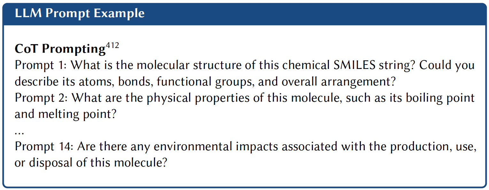

6 Accelerating Applications
The application of accelerated approaches in the scientific discovery cycle (see [fig:applications]) hinges on their ability to streamline and enhance each stage of the process. However, a fundamental challenge in effectively implementing these approaches lies in the choice of machine-readable representation.
This challenge is particularly evident in the representation of molecules and materials, which must balance computational efficiency with the preservation of structural, compositional, and functional properties. Take, for example, the high-temperature superconductor YBa2Cu3O_7-x. While atomic positions and coordinates are theoretically sufficient to solve the Schrödinger equation and describe this material, such a representation may not provide the adaptability necessary for diverse tasks. What defines a good representation depends on the problem. [Huang and Lilienfeld (2016)]. A representation designed to predict critical temperature must efficiently encode the relationship between oxygen stoichiometry and superconducting properties, emphasizing features like oxygen vacancy patterns and charge transfer mechanisms. Conversely, a representation for structural stability might prioritize different geometric or bonding characteristics.
This tension has led to three primary strategies for representing molecules and materials (read [sec:common_representations] to learn in detail about the different representations that currently exist). First, domain-specific text-based formats—such as simplified molecular input line entry system (SMILES) [Weininger (1988)], self-referencing embedded strings (SELFIES) [Krenn et al. (2020)], and crystallographic information file (CIF) [Hall, Allen, and Brown (1991)]—offer compact, machine-readable encodings of structural information. While these necessarily omit certain physical details, their computational tractability has enabled breakthroughs, as demonstrated by Jablonka et al. (2024) in their large language model (LLM)-based generation of valid molecular and material structures.
Yet, the question remains: Which representation is optimal for a given task? Future advances in accelerated discovery will likely hinge on adaptive representations that dynamically balance these competing demands.
6.1 Property Prediction
general-purpose model (GPM)s have emerged as a powerful tool for predicting molecular and material properties, offering an alternative to traditional quantum mechanical calculations or specialized machine learning (ML) models. Current GPM-driven property prediction tasks span both classification and regression. Unlike conventional approaches that rely on task-specific architectures and extensively labeled data, GPMs have demonstrated strong generalization capabilities across diverse domains, efficiently adapting to various prediction tasks. Their success extends to multiple datasets, from standardized benchmarks such as MoleculeNet [Wu et al. (2018)], to curated datasets targeting specific applications such as antibacterial activity [Chithrananda, Grand, and Ramsundar (2020)] or photovoltaic efficiency[Aneesh et al. (2025)].
Three key methodologies have been explored to adapt LLMs for property prediction: prompting techniques (see [sec:prompting]), fine-tuning (see [sec:fine-tuning]) on domain-specific data, and retrieval-augmented generation (RAG) (see [sec:rag]) approaches that combine LLMs with external knowledge bases.
Key: P = prompting; FT = fine-tuned model; RAG = retrieval-augmented generation; C = Classification; R = Regression
6.1.1 Prompting
Prompt engineering involves designing targeted instructions to guide GPMs in performing specialized tasks without altering their underlying parameters by leveraging their embedded knowledge. In molecular and materials science, this strategy goes beyond simply asking a model to predict properties. It also includes carefully structured prompts to elicit detailed molecular and material descriptions directly from the model’s pre-trained knowledge.
H. Liu et al. (2025) conducted a comprehensive evaluation of different prompting techniques to predict the properties of organic small molecules and crystal materials. Some of these techniques included domain-knowledge (prior knowledge was embedded in the prompt), expert (role-play instructions), and few-shot chain-of-thought (CoT) (the text“Let’s think step by step” is added) prompting. Of these, domain knowledge achieved maximum performance. However, their evaluation was limited to a relatively small set of molecules and tasks, and the effectiveness of their domain-knowledge approach may not generalize to other molecular property domains.
Building on these foundational prompting strategies, few-shot prompting approaches leverage in-context learning (ICL) to enhance performance through selected examples Y. Liu et al. (2024) used SMILES string representations of molecules with few-shot ICL, retrieving structurally similar molecules as demonstrations to enhance property prediction. This approach highlights how ICL can transfer knowledge from similar molecule examples without requiring model fine-tuning for each task. However, the effectiveness of ICL depends on the quality of retrieved examples.
Fifty, Leskovec, and Thrun (2023) moved beyond direct text prompting of molecules and introduced context-aware molecule prediction (CAMP): an ICL algorithm that uses a two-stage encoding approach without relying on pre-trained LLMs. First, a specialized message-passing neural network (MPNN) encodes molecule graphs into molecular embeddings rather than processing them as raw text. These embeddings are then fed into a transformer encoder, which learns contextualized representations across the support set (a small collection of labeled molecule-property pairs) and the unlabeled query molecules. They demonstrated CAMP’s ability to outperform existing few-shot learning baselines by providing relevant molecular examples within the prompt context. However, this approach is constrained by the context-length limitations of the underlying language model (LM)s and the challenge of selecting optimal demonstration examples.
More sophisticated approaches have leveraged prompting as part of multi-modal frameworks. The LLM4SD pipeline by Zheng et al. (2025) employs specialized prompts to guide LMs through their pre-trained knowledge on scientific literature, generating known rules (e.g., molecules weighing under 500 Da are more likely to pass the blood-brain barrier) that transform molecules into feature vectors (e.g. CCO could translate to a vector \([2,46.07,1,1]\) where each number represents a feature of the molecule, in this example [# C, MW, # H-bond donors, # H-bond acceptors]) for use with a random forest model, which they consider “interpretable”. This approach outperformed specialized state-of-the-art (SOTA) models across \(58\) benchmark tasks, while providing interpretable reasoning about prediction logic (see [tab:property_prediction_models] for properties predicted by this model). However, its reliance on rule extraction may limit its ability to capture complex, non-linear relationships that specialized deep learning models can identify.
6.1.1.1 LLMs as Feature Extractors
Another emerging application of LLMs is their use as “feature extractors”, where they generate textual or embedded representations of molecules or materials. For instance, in materials science, Aneesh et al. (2025) employed LLMs to generate text embeddings of perovskite solar cell compositions. These embeddings were subsequently used to train a graph neural network (GNN) for predicting power conversion efficiency, demonstrating the potential of LLMs to enhance feature representation in materials informatics. Similarly, in the molecular domain, Srinivas and Runkana (2024b) used zero-shot LLM prompting (see [box: cot_prompting] for prompt examples) to generate detailed textual descriptions of molecular functional groups, which are used to train a small LM. This LM is used to compute text-level embeddings of molecules. Simultaneously, they generate molecular graph-level embeddings from SMILES string molecular graph inputs. They finally integrate the graph and text-level embeddings to produce a semantically enriched embedding.

In a different implementation of fine-tuning, Balaji et al. (2023) used ChatGPT to generate text descriptions of molecules that were then used to train a RoBERTa (125M) model for property prediction, showing how LM-generated representations can access latent spaces that SMILES strings alone might not capture. Similarly, Z. Li et al. (2024) introduced the MoleX framework, which fine-tunes ChemBERTa-2[Ahmad et al. (2022)] on Group SELFIES [Cheng et al. (2023)] (a functional group-based molecular representation) to then extract a single LLM-derived embedding of molecules that captures the chemical semantics at the functional group level. This allowed them to determine which functional groups or fragments contribute to molecular properties, which in turn can be converted into reliable explanations of said properties.
6.1.2 Fine-Tuning
GPT-3 for predicting solid-solution formation in high-entropy alloys Performance comparison of different ML approaches as a function of the number of training points. Results are shown for Automatminer (blue), CrabNet transformer (orange), fine-tuned GPT-3 (red), with error bars showing standard error of the mean. The non-Google test set shows the fine-tuned GPT-3 model tested on compounds without an exact Google search match (dark red). The dashed line shows performance using random forest. GPT-3 achieves comparable accuracy to traditional approaches with significantly fewer training examples. Data adapted from Jablonka et al. (2024)
6.1.2.1 language-interfaced finetuning (LIFT)
Dinh et al. (2022) showed that reformulating regression and classification as questions & answers (Q&A) tasks enables the use of unmodified model architecture while improving performance (see [sec:fine-tuning] for a deeper discussion of LIFT). In recognizing the scarcity of experimental data and acknowledging the persistence of this limitation, Jablonka et al. (2024) designed a LIFT-based framework using GPT-3 fine-tuned on task-specific small datasets (see [tab:property_prediction_models]). They seminally demonstrated that fine-tuned GPT-3 can match or surpass specialized ML models in various chemistry tasks. A key finding was fine-tuned GPT-3’s ability to generalize beyond training data. When tested on compounds absent from Google Search (and likely its training data), it performed well, proving that it was not simply recalling memorized information (see 1).
In a follow-up to Jablonka et al. (2024)’s work, Van Herck et al. (2025) systematically evaluated this approach across 22 diverse real-world chemistry case studies using three open-source models. They demonstrate that fine-tuned LLMs can effectively predict various material properties. For example, they achieved \(96\%\) accuracy in predicting the adhesive free-energy of polymers, outperforming traditional ML methods like random forest (\(90\%\) accuracy). When predicting properties of monomers using SMILES notation, the fine-tuned models reached average accuracies of \(84\%\) across four different properties. Particularly notable was the ability of LLMs to work with non-standard inputs, like in a protein phase separation study they did, where raw protein sequences could be directly input without pre-processing and achieve \(95\%\) prediction accuracy. At the same time, when training datasets were very small (15 data points), the predictive accuracy of all fine-tuned models was lower than the random baseline (e.g. MOF synthesis). These case studies preliminarily demonstrate that these models can achieve predictive performance with some small datasets, work with various chemical representations (SMILES, metal-organic framework (MOF)id, and International Union of Pure and Applied Chemistry (IUPAC) names), and can outperform traditional ML approaches for some material property prediction tasks.
In the materials domain, LLMprop fine-tunes T5[Raffel et al. (2020)] to predict crystalline material properties from text descriptions generated by Robocrystallographer[Ganose and Jain (2019)]. By discarding T5’s decoder and adding task-specific prediction heads, the approach reduces computational overhead while leveraging the model’s ability to process structured crystal descriptions. The method demonstrates that natural language representations can effectively capture key material features, offering an alternative to traditional graph-based models like GNNs.
Fine-tuning has been used to adapt selective state space model (SSM)s like Mamba (see [sec:example_architectures]). By pre-training on 91 million molecules, the Mamba-based model \(\text{O}_{SMI}-{\text{SSM}-}336\textit{M}\) outperformed transformer methods (Yield-BERT[Krzyzanowski, Pickett, and Pogány (2025)]) in reaction yield prediction (e.g., Buchwald-Hartwig cross-coupling) and achieved competitive results in molecular property prediction benchmarks.[Soares et al. (2025)]
6.1.2.2 Foundational GNNs and machine-learning interatomic potential (MLIP)s
The fine-tuning approach has been applied to “foundational GNNs” [Sypetkowski et al. (2024); Shoghi et al. (2023)] and MLIPs, approaches distinct from GPMs. For example, [Shoghi et al. (2023); Sypetkowski et al. (2024)] show SOTA performance on property prediction tasks. “Foundational” MLIPs pre-trained on large datasets encompassing many chemical elements can be fine-tuned for specific downstream tasks [Batatia et al. (2022)], such as calculating sublimation enthalpies of molecular crystal polymorphs [Kaur et al. (2025)].
6.1.2.3 Limitations
One central challenge is finding balance in datasets. In practical applications, researchers often have many more examples of poor-performing materials than optimal ones, resulting in unbalanced datasets that can diminish model performance. Van Herck et al. (2025) point out that in the catalyzed cleavage reaction study, only \(3.8\%\) of catalysts were labeled as “good”, forcing researchers to reduce their training set significantly to maintain balance. They also note that LLMs struggle with highly complex or noisy datasets, as seen in their study of catalytic isomerization, where even after hyperparameter optimization, the models failed to achieve meaningful predictive power due to the high noise in the experimental data and limited sample size. Finally, they note that although LLMs can work with different chemical representations, the choice of representation significantly impacts performance. For example, when predicting polymerization rates, models using SMILES notation significantly outperformed those using IUPAC names, indicating that representation selection remains an important consideration.
Fine-tuning effectively adapts LLMs to specialized chemistry tasks, but its dependence on static datasets hinders adaptability to new or evolving knowledge. RAG, whose fundamentals are described in detail in [sec:rag], overcomes these limitations by dynamically integrating external data sources, enabling more flexible and up-to-date reasoning.
6.1.3 Agents
Caldas Ramos et al. introduce MAPI-LLM, a framework that processes natural-language queries about material properties using an LLM to decide which of the available tools such as the Materials Project application programming interface (API), the Reaction-Network package, or Google Search to use to generate a response. [Jablonka et al. (2023)] MAPI-LLM employs a reasoning and acting (ReAct) prompt (see [sec:arch_agents] to read more about ReAct), to convert prompts such as “Is \(Fe_2O_3\) magnetic?” or “What is the band gap of Mg(Fe3O3)2?” into queries for Materials Project API. The system processes multi-step prompts through logical reasoning, for example, when asked “If Mn2FeO3 is not metallic, what is its band gap?”, the LLM system creates a two-step workflow to first verify metallicity before retrieving the band gap.
Building on this foundation of agent-based materials querying, Chiang et al. (2024) advanced the approach with LLaMP, a framework that employs “hierarchical” ReAct agents to interact with computational and experimental data. This “hierarchical” framework employs a supervisor-assistant agent architecture where a complex problem is broken down and tasks are delegated to domain-specific agents. LLaMP addresses the challenge of hallucinations more effectively than standard LLM approaches by grounding responses in retrieved materials databases, retrieving materials data (e.g., crystal structures, elastic tensors) while counteracting systematic LLM biases in property predictions. These biases include the tendency for LLMs to overestimate certain properties like bulk moduli and to exhibit errors in bandgap predictions based on compositional patterns learned during training rather than physical principles.
6.1.4 Core Limitations
CrabNet. (A. Y.-T. Wang et al. 2021) Lower values indicate better predictive performance. Data adapted from Alampara, Miret, and Jablonka (2024)
Alampara, Miret, and Jablonka (2024) introduced MatText, a framework for evaluating LMs ability to predict properties of materials using text-based representations. Their findings indicate that current LLMs (including pre-trained BERT and fine-tuned LLaMA-3-8B) are effective for tasks relying purely on compositional information (e.g., element types and local bonding patterns), but struggle to leverage geometric or positional information encoded in text, as reflected in 2. This observation suggests that transformer-based architectures may be fundamentally limited to applications where spatial understanding is not required. Their experiments with data scaling and text representations reveal that increasing pre-training data or adding geometric details fails to improve downstream property prediction, challenging the conventional assumption that larger models and datasets universally enhance performance. [Frey et al. (2023)] Notably, Frey et al. (2023) demonstrated power-law scaling in chemical LLMs, but MatText’s results imply that such scaling may not overcome architectural biases against geometric reasoning in materials tasks.[Gruver et al. (2024)]
6.2 Molecular and Material Generation
Early work in molecular and materials generation relied heavily on unconditional generation, where models produce novel structures without explicit guidance, relying solely on patterns learned from training data. For example, latent space sampling in autoencoders, where random vectors are decoded into new structures.[Yoshikai et al. (2024)] These methods excel at exploring chemical space broadly but lack fine-grained control. This limitation underscores the need for conditional generation, using explicit prompts or constraints (e.g., property targets, structural fragments), to steer GPMs toward meaningful molecule or material designs. Beyond the generation step, as 3 shows, critical bottlenecks persist in synthesizability and physical consistency at the validation stage.
6.2.1 Generation
6.2.1.1 Prompting
While zero-shot and few-shot prompting strategies demonstrate promising flexibility for molecule generation, benchmark studies [Guo et al. (2023)] reveal significant limitations that restrict their practical utility. Guo et al. (2023) exposed fundamental gaps in LLMs’ molecular design capabilities through a systematic evaluation. GPT-4 was reported to produce chemically valid SMILES \(89\%\) of the time but achieving less than \(20\%\) accuracy in matching the target specifications. This result is far below specialized models like MolT5[Edwards et al. (2022)]. They conclude that this performance gap stems from LLMs’ inadequate understanding of SMILES syntax and structure-property relationships. Subsequent work by Bhattacharya et al. (2024) explored whether systematic prompt engineering could overcome these limitations, demonstrating that these prompts could guide Claude 3 Opus to generate chemically valid molecules (\(97\%\) syntactic validity) with controlled modifications, including fine-grained structural changes (median Tanimoto similarity \(0.67\)–\(0.69\)) and predictable electronic property shifts (0.14 eV–0.27 eV highest occupied molecular orbital (HOMO) energy changes). Hybrid approaches like FrontierX extend this method with knowledge-augmented prompting, where LLMs generate both molecule predictions and explanations that are used to fine-tune smaller LMs, with all resulting embeddings ultimately combined via hierarchical attention mechanisms to produce the final SMILES representation[Srinivas and Runkana (2024a)]. It showed improved accuracy over pure prompting strategies but sacrificed the generalizability that makes LLMs attractive, as the model requires re-training for each new molecular domain.
6.2.1.2 Fine-Tuning
To overcome the limitations of prompting, fine-tuning has been adopted in molecular and materials generation, much like its use in property prediction with LIFT-based frameworks (see [sec:fine-tuning] for a deeper explanation of LIFT and 1.1.2 for a discussion of LIFT applied to property prediction tasks). B. Yu et al. (2024) demonstrated that systematic fine-tuning in various chemical tasks including molecule generation from captions can improve performance while remaining parameter-efficient, using only \(0.58\%\) of trainable parameters via low-rank adaptation (LoRA).
The molecule-caption translation task (Mol2Cap), which involves generating textual descriptions from molecular representations and vice versa (Cap2Mol), has become a standard benchmark for evaluating GPMs for molecule generation. [Edwards et al. (2022)] Under the “Mol2Cap”/“Cap2Mol” task paradigm, in-context molecule adaptation (ICMA) avoids domain-specific pre-training by combining retrieval-augmented in-context learning with fine-tuning on ICL examples.[J. Li et al. (2025)] On the ChEBI-20[Edwards, Zhai, and Ji (2021)] and PubChem324k[Z. Liu et al. (2023)] datasets, ICMA nearly doubles baseline performance, with ICMA powered byMistral-7B achieving a 0.581 bilingual evaluation understudy (BLEU) score in Mol2Cap and \(46.0\%\) exact match in Cap2Mol.[J. Li et al. (2025)] However, its reliance on retrieved examples raises concerns about generalization to novel scaffolds. Similarly, MolReFlect enhances fine-grained alignment through a teacher-student framework, where a larger LLM (e.g., GPT-4) extracts substructure-aware captions to guide a smaller model (Mistral-7B), improving Cap2Mol accuracy while reducing hallucinations.[J. Li et al. (2024)] Meanwhile, PEIT-LLM extends the task to property-conditioned generation, using instructions (SMILES-text-property tuples) to optimize for captioning and prediction jointly.[Lin et al. (2025)]
Fine-tuned LMs have shown promise in molecule and materials generation. However, their reliance on decoding and SMILES/SELFIES representations introduces fundamental limitations: degeneracy (multiple valid SMILES for the same molecule) and difficulty capturing complex structural relationships implicit in textual descriptions.
6.2.1.3 Diffusion and Flow Matching
Diffusion and flow-based models operate directly on latent representations, enabling more flexible generation of diverse and novel structures.[Zhu, Xiao, and Honavar (2024)] Moreover, emerging hybrid architectures combine the strengths of LLMs with diffusion and flow matching models to overcome the limitations of each paradigm individually [Sriram et al. (2024)].
Beyond text-based representations, llamole introduced a multimodal LLM approach capable of text and graph generation by integrating a base LLM with graph diffusion transformers and graph neural networks for multi-conditional molecular generation and retrosynthetic planning. Specifically they used different trigger (<design> and <retro>) and query (<query>) tokens for switching between them and improved success in synthesis success rates from \(5\%\) to \(35\%\) . [G. Liu et al. (2024)]
A unique challenge with crystalline materials is generating a material that possesses both discrete (atom type) and continuous (atomic position and lattice geometry) variables. Sriram et al. (2024) developed FlowLLM to address this challenge. They recognized that the respective strengths of LLMs, modeling discrete values and conditional prompting, and denoising models, modeling continuous values and equivariances, could be combined to create a hybrid architecture. A fine-tuned LLM is used to learn an effective base distribution of metastable crystals via text-based representations, which is then iteratively refined through Riemannian flow-matching (RFM) to optimize atomic coordinates and lattice parameters.[Sriram et al. (2024)]
6.2.1.4 Reinforcement Learning and Preference Optimization
Translating GPM generated outputs to the real world requires designing molecules and materials with specific target properties. reinforcement learning (RL) and preference optimization techniques[D. Lee and Cho (2024)] have emerged as powerful solutions for this challenge. For instance, Jang et al. (2025) combined supervised fine-tuning (SFT) and RL using proximal policy optimization (PPO) to generate diverse molecular sequences auto-regressively. This approach excels in exploring a broad chemical space, but incurs high computational costs due to its reliance on iterative, sequence-based generation. In contrast, Cavanagh et al. (2024) employed direct preference optimization (DPO) with SFT to fine-tune LLMs for molecular design, leveraging SMILES representations to optimize drug-like properties (e.g., hydrogen bond donors/acceptors and LogP). While DPO reduces computational overhead in comparison to PPO, it trades off molecular diversity, a key strength of the work by Jang et al. (2025), due to the inherent constraints of preference-based fine-tuning.
Beyond these methods, energy ranking alignment (ERA) introduces a different optimization paradigm. [Chennakesavalu et al. (2025)] Unlike PPO or DPO, ERA uses gradient-based objectives to guide word-by-word generation with explicit reward functions, converging to a physics-inspired probability distribution that allows fine control over the generation process. In single-property optimization tasks, ERA successfully aligned molecular transformers to generate compounds with targeted chemical properties (QED, LogP, ring count, molar refractivity) while maintaining \(59-84\%\) chemical validity without regularization. For multi-objective optimization, it achieved precise control over property trade-offs using weighted energy functions.
Calanzone, D’Oro, and Bacon (2025) also address the challenge of multi-objective molecular generation with MOL-MOE, a mixture of experts (MoE) framework (see [sec:arch-moes] to learn more about MoE architectures). MOL-MOE dynamically combines property-specific expert models at test time using preference-guided routers toward drug-relevant molecular properties enabling flexible steering across multiple objectives without re-training. Compared to alternatives like MORLHF[Zhou et al. (2024)], SFT with rewards-in-context, and simple model merging such as Rewarded Soups[Ramé et al. (2023)]), MOL-MOE achieves superior performance in both property optimization and steerability—particularly in out-of-distribution scenarios where other methods struggle.
CrystalFormer-RL uses RL fine-tuning to optimize CrystalFormer[Cao et al. (2024)], a transformer-based crystal generator, with rewards from discriminative models (e.g., property predictors)[Cao and Wang (2025)]. RL improves stability (lower energy above convex hull) and enables property-guided generation (e.g., high dielectric constant + band gap). Here, RL fine-tuning is shown to outperform supervised fine-tuning, enhancing both novel material discovery and retrieval of high-performing candidates from the pre-training dataset.
6.2.1.5 Agents
Agent-based frameworks leveraging LLMs, deeply explained in [sec:agents], have emerged as approaches for autonomous molecular and materials generation, demonstrating capabilities that extend beyond simple prompting or fine-tuning by incorporating iterative feedback loops, tool integration, and human-artificial intelligence (AI) collaboration. The dZiner framework implements this approach for the inverse design of materials, where agents input initial SMILES strings with optimization task descriptions and generate validated candidate molecules by retrieving domain knowledge from the literature.[Ansari et al. (2024)] It also uses domain-expert surrogate models to evaluate the required property in the new molecule/material. These surrogate models are highly customizable to the desired property and give the user the option to train their own ML model or using an existing SOTA model. Ansari et al. (2024) demonstrated dZiner’s capabilities in generating surfactants for critical micelle concentration reduction, WDR5 inhibitors, and optimizing MOF organic linkers for CO2 adsorption. The CLADD framework adopts a RAG-enhanced multi-agent approach where specialized teams including “Planning”, “Knowledge Graph”, and “Molecular Understanding” collaborate to dynamically retrieve and integrate external biochemical knowledge for drug discovery tasks without requiring domain-specific fine-tuning.[N. Lee et al. (2025)]
6.2.2 Validation
6.2.2.1 General validation
The most fundamental validation approaches use cheminformatics tools like RDKit to verify molecular validity. RDKit provides robust tools for validating molecules through its ability to parse and sanitize molecules from SMILES strings. If a step in the SMILES to structure conversion process fails, then the molecule is considered invalid. More sophisticated validation involves quantum mechanical calculations to compute molecular properties such as formation energies[Kingsbury et al. (2022)]. These computationally expensive operations provide deeper insights into whether generated structures are viable. Models are also evaluated for their ability to generate unique molecules by calculating the proportion of unique molecules in generated sets, often using molecular fingerprints or structural descriptors.
The gold standard for validation is experimental synthesis, but significant gaps exist between computational generation and laboratory realization. Preliminarily, metrics like Tanimoto similarity and Fréchet ChemNet distance [Preuer et al. (2018)] quantify structural resemblance, which can indicate synthetic feasibility when training data consists of known compounds. Retrosynthesis prediction algorithms attempt to bridge this gap by evaluating synthetic accessibility and proposing potential synthesis routes (see 1.3). However, these methods still face limitations in accurately predicting real-world synthesizability [Zunger (2019)].
6.2.2.2 Conditional Generation Validation
Beyond establishing the general validity of generated molecules, evaluation methods can assess both their novelty relative to training data and their ability to meet specific design goals. For inverse design tasks, such as optimizing binding affinity or solubility, the de novo molecule generation benchmark GuacaMol differentiates between distribution-learning (e.g., generating diverse, valid molecules) and goal-directed optimization (e.g., rediscovering known drugs or meeting multi-objective constraints) [Brown et al. (2019)]. In the materials paradigm, frameworks such as MatBench Discovery evaluate analogous challenges such as stability, electronic properties, and synthesizability, but adapt metrics to periodic systems, such as energy above hull or band gap prediction accuracy[Riebesell et al. (2025)]. Recently, they introduced the “discovery acceleration factor”, which quantifies how effective a model is at finding stable structures relative to a random baseline.
6.3 Retrosynthesis
The practical utility of GPMs for generating molecules and materials remains limited by a persistent gap in their synthetic feasibility. Early work by Schwaller et al. (2021) laid important groundwork by demonstrating how attention-based neural networks can learn meaningful representations of chemical reactions, enabling accurate classification and prediction of reaction outcomes. Their model, trained on millions of reactions from patent and literature data, showed that learned reaction embeddings were capable of capturing nuanced chemical relationships.
Recent efforts have built on this foundation by integrating synthesizability directly into molecular and materials generation pipelines that leverage both domain-specific tools and GPMs. For example, Sun et al. (2025) adapted Llama-3.1-8B and Llama-3.2-1B to predict retrosynthetic pathways and identify commercially available building blocks for experimentally validated SARS-CoV-2 Mpro inhibitors. Similarly, G. Liu et al. (2024) introduced a multimodal framework that combines reaction databases with chemical intuition encoded in LLMs, improving the prioritization of high-yield, low-cost synthetic routes.
More recent work has explored how fully fine-tuned LLMs can serve as comprehensive chemistry assistants for experimental guidance. Zhang et al. (2025) developed Chemma, a fine-tuned LLaMA-2-7B model trained on 1.28 million chemical reaction question-answer pairs. Through an active learning framework that incorporates experimental feedback (see [sec:rl] to learn more about RL), human-Chemma collaboration successfully optimized an unreported Suzuki-Miyaura cross-coupling reaction within only 15 experimental runs.
Predictive retrosynthesis has also extended to the inorganic domain. Kim, Jung, and Schrier (2024) demonstrated that fine-tuned GPT-3.5 and GPT-4 can predict both the synthesizability of inorganic compounds from their chemical formulas and select appropriate precursors for synthesis, achieving performance comparable to specialized ML models with minimal development time and cost. In a follow-up work, they extended this approach to structure-based predictions of inorganic crystal polymorphs, where LLMs provided human-readable explanations for their synthesizability assessments[Kim, Schrier, and Jung (2025)]. Notably, their structure-aware models correctly identified twelve hypothetical compounds as non-synthesizable despite their thermodynamic stability, perfectly matching experimental outcomes where synthesis attempts failed.
Beyond retrosynthetic prediction, LLMs have also been deployed as reasoning engines for autonomous design. Bran et al. (2024) developed ChemCrow, an LLM-based system that autonomously plans and executes the synthesis of novel compounds by integrating specialized tools like a retrosynthesis planner (see [sec:planning] to read more about this capability of ChemCrow and its limitations) and reaction predictors. This approach mirrors the iterative experimental design cycle employed by human chemists, but is equipped with the scalability of automation. Notably, systems like ChemCrow rely on high-quality reaction data to ground their reasoning in empirically viable chemistry, which, depending on the design space, could be a limitation.
6.4 LLMs as Optimizers
logP.
Discovering novel compounds and reactions in chemistry and materials science has long relied on iterative trial-and-error processes rooted in existing domain knowledge [Taylor et al. (2023)]. While, as explained in 1.3, those methods are used to accelerate this process, optimization methods help improve conditions, binding affinity, etc. These approaches are slow and labor-intensive. Traditional data-driven methods aimed to address these limitations by combining predictive ML models with optimization frameworks such as Bayesian optimization (BO) or evolutionary algorithm (EA)s. These frameworks balance exploration of uncharted regions in chemical space with exploitation of known high-performing regions [X. Li et al. (2024); Häse et al. (2021); Shields et al. (2021); Griffiths and Hernández-Lobato (2020); Rajabi-Kochi et al. (2025)].
Recent advances in LLMs have unlocked potential for addressing optimization challenges in chemistry and related domains [Fernando et al. (2023); Yang et al. (2023); Chen et al. (2024)]. A key strength of LLMs lies in their capacity to frame optimization tasks through natural language, which enhances knowledge incorporation, improves candidate comparisons, and increases interpretability. This aligns well with chemical problem-solving, where complex phenomena, such as reaction pathways or material behaviors, are often poorly captured by standard nomenclature; however, they can still be intuitively explained through natural language. Moreover, GPMs’ general capabilities provide flexibility beyond classical methods, which have to be trained from scratch if the optimization problem or any of its variables changes. By encoding domain-specific knowledge—including reaction rules, thermodynamic principles, and structure-property relationships—into structured prompts, LLMs can synergize expertise with their ability to navigate complex chemical optimization problems.
Current LLM applications in chemistry optimization vary in scope and methodology. Many studies integrate LLMs into BO frameworks, where models guide experimental design by predicting promising candidates [Ranković and Schwaller (2023)]. Others employ genetic algorithm (GA)s or hybrid strategies that combine LLM-generated hypotheses with computational screening [Cissé et al. (2025)].
6.4.1 LLMs as Surrogate Models
A prominent LLM-driven strategy positions these models as surrogate models within optimization loops. Typically implemented as Gaussian process regression (GPR), surrogate models learn from prior data to approximate costly feature-outcome landscapes, which are often computationally and time-consuming to evaluate, thereby guiding the acquisition. LLMs offer major advantages in this role primarily through strong low-data performance. Their ICL capability enables task demonstration with minimal prompt examples while leveraging chemical knowledge from pre-training to generate accurate predictions. This allows GPMs to compensate for sparse experimental data effectively.
Ramos et al. (2023) demonstrated the viability of this paradigm through a simple yet effective framework that combines ICL using only one example in the prompt with a BO workflow. Their BO-ICL approach uses few-shot examples formatted as question-answer pairs, where the LLM generates candidate solutions conditioned on prior successful iterations. These candidates are ranked using an acquisition function, with top-\(k\) selections integrated into subsequent prompts to refine predictions iteratively. Remarkably, this method achieved high performance in optimizing catalytic reaction conditions, even matching the top-1 accuracies observed in experimental benchmarks. This emphasizes the potential of LLMs as accessible, ICL optimizers when coupled with well-designed prompts.
To address limitations in base LLMs’ inherent chemical knowledge—particularly their grasp of specialized representations like SMILES or structure-property mappings—J. Yu et al. (2025) introduced a hybrid architecture augmenting pre-trained LLMs with task-specific embedding and prediction layers. These layers, fine-tuned on domain data, align latent representations of input-output pairs (denoted as <x> and <y> in prompts), enabling the model to map chemical structures and properties into a unified, interpretable space. Crucially, the added layers enhance chemical reasoning without sacrificing the flexibility of ICL, allowing the system to adapt to trends across iterations, similarly to what was done by Ramos et al. (2023). In their evaluations of molecular optimization benchmarks, such as the practical molecular optimization (PMO) [Gao et al. (2022)], they revealed improvements over conventional methods, including BO-Gaussian process (GP), RL methods, and GA.
J. Yu et al. (2025) further highlighted the framework’s extensibility to diverse black-box optimization challenges beyond chemistry. This represents one of the most important advantages of using LLMs as orchestrators of the optimization process. The flexibility of natural language in this process enables the procedure to be applied to any optimization process. In contrast, classical methods are constrained to the specific task for which they are designed due to the need to train the surrogate model.
6.4.2 LLMs as Next Candidate Generators
Recent studies demonstrate the potential of LLMs to enhance EAs [Lu et al. (2025)] and BO [Amin, Raja, and Krishnapriyan (2025)] frameworks by leveraging their embedded chemical knowledge and ability to integrate prior information, thereby reducing computational effort while improving output quality. Within EAs, LLMs refine molecular candidates through mutations (modifying molecular substructures) or crossovers (combining parent molecules). In BO frameworks, they serve as acquisition functions, utilizing surrogate model predictions—both mean and uncertainty—to select optimal molecules or reaction conditions for evaluation.
For molecule optimization, J. Yu et al. (2025) introduced MultiModel, a dual-LLM system where one model proposes candidates and the other supplies domain knowledge (see 1.4.3). By fine-tuning the “worker” LLM to recognize molecular scaffolds and target properties, and expanding the training pool to include a million-size pre-training dataset, they achieved hit rates exceeding \(90\%\). Similarly, H. Wang, Skreta, et al. (2025) developed MoLLEO, integrating an LLM into an EA to replace random mutations with LLM-guided modifications. Here, GPT-4 generated optimized offspring from parent molecules, significantly accelerating convergence to high fitness scores. Notably, while domain-specialized models (BioT5, MoleculeSTM) underperformed, the general-purpose GPT-4 excelled—a finding that underscores the context-dependent utility of LLMs
In a related approach, Lu et al. (2025) showed that well-designed prompts—incorporating task-specific constraints, objectives, and few-shot examples—enable general LLMs (Claude-Sonnet, o1-preview) to generate high-quality candidates without fine-tuning, outperforming both random selection and vanilla GAs in functional transition metal complexes (TMC) design.
6.4.3 LLMs as Prior Knowledge Sources
A key advantage of integrating LLMs into optimization frameworks is their ability to encode and deploy prior knowledge within the optimization loop. As illustrated in 4, this knowledge can be directed into either the surrogate model or candidate generation module, significantly reducing the number of optimization steps required through high-quality guidance.
For example, J. Yu et al. (2025) deployed a “research” agent that leverages Google search and RDKit to verify and rank molecules generated by “worker” agents against target features and properties. Their results demonstrate substantial improvements when this filtering mechanism is applied.
Similarly, Cissé et al. (2025) introduced BORA, which contextualizes conventional black-box BO using an LLM. BORA maintains standard BO as the core driver but strategically activates the LLM when progress stalls. This leverages the model’s ICL capabilities to hypothesize promising search regions and propose new samples, regulated by a lightweight heuristic policy that manages costs and incorporates domain knowledge (or user input). Evaluations on synthetic benchmarks such as the catalyst optimization task for hydrogen generation show that BORA accelerates exploration, improves convergence, and outperforms existing LLM-BO hybrids.
6.4.4 How to Face Optimization Problems?
Published works explore different ways of using LLMs for optimization problems in chemistry, from simple approaches, such as just prompting the model with some initial random set of experimental candidates and iterating [Ramos et al. (2023)], to fine-tuning models in BO fashion [Ranković and Schwaller (2025)]. The most efficient initial point is by relying entirely on a ICL approach, which allows one to obtain a first signal rapidly. Such initial results will enable to determine whether a more complex, computationally intensive approach is necessary or whether prompt engineering is reliable enough for the application. Fine-tuning can be used as a way to enhance the chemical knowledge of the LLMs and can lead to improvements in optimization tasks where the model requires such knowledge to choose or generate better candidates. Fine-tuning might not be a game-changer for other approaches that rely more on sampling methods [H. Wang, Guo, et al. (2025)].
While some initial works showed that LLMs trained specifically on chemistry perform better for optimization tasks [Kristiadi et al. (2024)], other works showed that a GPM such as GPT-4 combined with an EA outperformed all other models [H. Wang, Skreta, et al. (2025)]. Is it better to incorporate a general model or a chemistry LM into the optimization frameworks? We hypothesize that for models of the same size (in number of parameters) and similar training size—attending to peta floating point operations per second (PFLOP)s—a chemical LM (a specialized model) will consistently outperform general models. If the models differ significantly in size, the larger model will typically perform better.